Plugin de Secuencia
El plugin de Secuencia
es
parte de la solución UML+ para la realización de
diagramas según la especificación UML 2.0, . Este diagrama
permiten
modelar la interacción entre objetos, mediante el paso de mensajes
entre estos, de forma secuencial y temporal, este diagrama no describe
la manipulación de los datos durante esta secuencia.
Los elementos propios de este
diagrama son:
- objeto
- Objeto
- Objeto de interfaz
- Objeto de Entidad
- Objeto de Control
- Corregión
- Invariante de Estado
- Fragmento Combinado
- Condición de Guarda
- Transición
- Transición Cíclica
Creación de un nuevo Diagrama de Secuencia.
Colosoft
soporta el Plugin de Secuencia mediante la creación de un nuevo
diagrama de Secuencia.
Para la creación de un nuevo diagrama usando el Plugin se selecciona en
el Marco de Expresión: Nuevo, Analista de Sistemas, Diagrama de
Secuencia.
Se ingresan los datos correspondientes al diagrama.
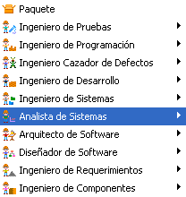 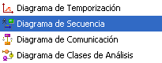
Figura 1. Creación de un diagrama de secuencia
Barra de herramientas del Plugin de Secuencia .
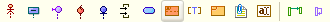
Figura 2. Barra de herramientas del plugin
Líneas de Vida: son líneas entrecortadas que son trazadas hacia abajo desde los participantes del Diagrama Objeto, Objeto, Objeto de interfaz, Objeto de Entidad y Objeto de Control, estas representan que tanto el objeto existe dentro de la secuencia. las líneas de vida son creadas automáticamente al crear un nuevo participante en el plugin de secuencia.
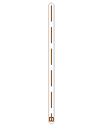
Figura 1. Representación de una línea de vida
Cuando se selecciona un participante del diagrama su línea de vida es resaltada y aparece un rectángulo en su extremo inferior, al arrastrarlo con el cursor el tamaño de la línea de vida cambia.
Actor: Un Actor genera eventos al sistema y requiere como respuesta alguna operación de este. El Actor posee su línea de vida y esta asocaido a alguna clase como objeto, Clase, o combinado de ambas.
Para crear un nuevo Actor se hace clic sobre el icono Actor y luego se hace clic sobre un espacio del diagrama de secuencia.
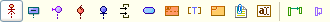
Figura 2. Creación de un actor
Ventana de Especificación de Actor: en esta se puede cambiar el nombre del clasificador. Es posible relacionar al Actor con una clase, bien sea que esta exista en un Diagrama de Clases que se encuentre abierto dentro del proyecto, seleccionado una entrada de la lista desplegable Clase; o bien asociandolo a una calse nueva en un diagrama de clases existente, seleccionando "Nueva Clase", esto abrirá una ventana que permite especificar el nombre de una nueva clase y editarla con la ventana de especificación de una Clase (Ver Plugin de Clases).
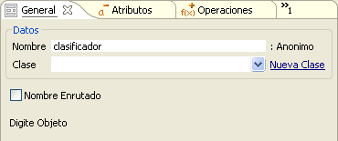
Figura 3. Datos generales del actor
Seleccionada la clase relacionada con el Actor se escoje el tipo de asociación Clase, Objeto o Combinado.
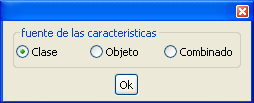
Figura 4. Fuente de características par el actor
El Actor mostrará en las siguientes pestañas de su ventana de especificación los Atributos y Operaciones de la clase escogida, bien sea como Clase, Actor o ambos, asociación que se escoge al momento de seleccionar o modificar la clase.
Los Atributos y Operaciones modificados o creados desde la especificación del Actor, también repercutieron sobre las clase asociada, tenga cuidado de no dañar la semántica deseada en el respectivo diagrama de clases.
El Actor recién Creado Luce como sigue:
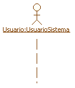
Figura 5. Representación del actor
Objeto: Aquellos que Interactúan con el actor y entre ellos mediante el envio de mensajes y acciones, dentro de una secuencia determinada generalmente por un caso de uso. Los objetos son instancia de las clases que en algún momento participan de la interacción.
Para crear un nuevo Objeto se hace clic sobre el icono objeto y luego se hace clic sobre un espacio del diagrama de secuencia.
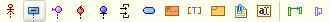
Figura 6. Creación del objeto
Una vez se oprime el botón, se muestra una ventana de especificación del nuevo objeto, como la de la Figura 7. En ésta se puede cambiar el nombre del clasificador. Es posible relacionar al Objeto con una clase, bien sea que esta exista en un Diagrama de Clases que se encuentre abierto dentro del proyecto, seleccionado una entrada de la lista desplegable Clase; o bien asociando una calse nueva a un diagrama de clases existente, seleccionando "Nueva Clase", esto abrirá una ventana que permite especificar el nombre de una nueva clase y editarla con la ventana de especificación de una Clase (Ver Plugin de Clases).
Figura 7. Atributos generales del objeto
Seleccionada la clase relacionada con el objeto, se escoje el tipo de asociación Clase, Objeto o Combinado
Figura 8. Fuente de características para el objeto
El objeto mostrará en las siguientes pestañas de su ventana de especificación los Atributos y Operaciones de la clase escogida, bien sea como Clase, Objeto o ambos, asociación que se escoge al momento de seleccionar o modificar la clase.
Los Atributos y Operaciones modificados o creados desde la especificación del objeto, también repercutieron sobre las clase asociada, tenga cuidado de no dañar la semántica deseada en el respectivo diagrama de clases.
El objeto recién creado luce como se muestra en la Figura 9.
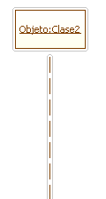
Figura 9. Representación del objeto
Objeto de interfaz: Es un objeto particular que interactúa directamente con el actor, recibiendo sus mensajes y peticiones y mostrándole a este, mensajes e información proveniente del sistema.
Para crear un nuevo Objeto de Inteface se hace clic sobre el icono Objeto de interfaz y luego se hace clic sobre un espacio del diagrama de secuencia.
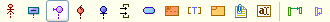
Figura 10. Botón de creación de una interfaz
Aparece la ventana de especificación del nuevo objeto, al igual que para el Actor y el Objeto, en esta ventana se puede cambiar el nombre del clasificador, así como asociarlo con una clase existente dentro del entorno, para mas información vea la explicación Ventana de Especificación de Actor.
El Objeto De interfaz recién Creado Luce como sigue:
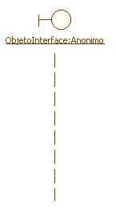
Figura 11. Interfaz sobre el diagrama de secuencia
Objeto de Control: Es un objeto particular que interactúa con los objetos de interfaz, actuando como mediador, entre este y el resto de objetos que procesan y atienden las peticiones y mensajes del usuario.
Para crear un nuevo Objeto de Control se hace clic sobre el icono Objeto de interfaz y luego se hace clic sobre un espacio del diagrama de secuencia.
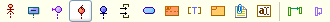
Figura 12. Creación de un objeto de control
Se muestra una ventana de especificación del nuevo objeto, al igual que para el Actor y el Objeto, en esta ventana se puede cambiar el nombre del clasificador, así como asociarlo con una clase existente dentro del entorno, para mas información vea la explicación de la ventana de especificación de Actor.
El Objeto De Control recién creado luce como sigue:
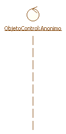
Figura 13. Representación de un objeto de control
Objeto de Entidad: Es un objeto particular que suele recibir y atender los mensajes con peticiones de los actores provenientes de objetos de control.
Para crear un nuevo Objeto de Entidad se hace clic sobre el icono Objeto de Entidad y luego se hace clic sobre un espacio del diagrama de secuencia.
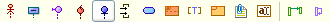
Figura 14. Botón de creación de un objeto entidad
Al oprimir el botón se muestra una ventana de especificación del nuevo objeto, al igual que para el Actor y el Objeto, en esta ventana se puede cambiar el nombre del clasificador, así como asociarlo con una clase existente dentro del entorno, para mas información vea la explicación de la ventana de especificación de Actor.
El Objeto De Entidad recién Creado Luce como sigue:
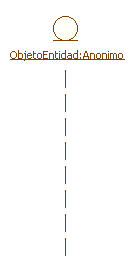
Figura 15. Representación de un objeto entidad
Modificando los Objetos del Diagrama de Secuencia: en un estado inicial en la realización del diagrama de secuencia, por lomenos, se deberían presentar los siguientes artefactos, este orden suele favorecer la representación del envio de mensajes entre objetos.
A Un Objeto o Actor del diagrama de secuencia se le puede modificar su posición vertical, simplemente haga clic sostenido sobre el icono del objeto y arrastrelo hasta su nueva posición.
las posiciones verticales de los objetos son fijas y no son modificables en el diagrama.
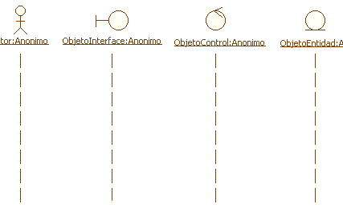
Figura 16. Diferentes elementos de un diagrama de secuencia
Transiciones: representan las interacciones entre los objetos, inician desde focos de control que son pequeños rectángulos sobre las líneas de vida, partiendo desde el objeto u actor de partida, hacia los foco de control sobre la línea de vida del objeto receptor. las transiciones pueden ser mensajes simples, también pueden ser mensajes de creación o destrucción de objetos o pueden ser mensajes síncronos o asíncronos, síncronos si hay o no una respuesta automática al mensaje.
Para crear una nueva transición se hace clic en el icono transición y luego se hace clic sobre la línea de vida del objeto o actor que envía la transición.

Figura 17. Creación de transiciones
Luego se hace clic sobre la línea de vida del objeto receptor del mensaje. No es necesario alinear verticalmente la transición, despues de su especificación esta será recta y a la altura del foco de partida.
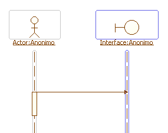
Figura 18. Transición creada entre actor y objeto interfaz
Al hacer clic sobre el diagrama, se muestra una ventana de especificación de la transición, en esta se puede cambiar el nombre de la transición y el tipo del Retorno. Se especifica el tipo de la transición de entre Mensaje, Creación y Síncrono
Si el tipo seleccionado es de Creación, el objeto receptor del mensaje iniciaría su línea de vida en el foco de recepción de la transición. La cabeza de la flecha de la transición cambia de rellena a simple.
Si el mensaje es Síncrono se espera un a respuesta automática del Objeto Receptor.
Selección Icono para mostrar un icono de la representación de la visibilidad de la Transición.
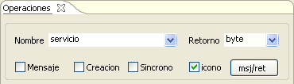
Figura 19. Operaciones de la transición
Haciendo clic en el botón msj/ret de puede establecer una respuesta al la transición que se esta creando. Escriba el nombre correspondiente y seleccione la casilla Visible.
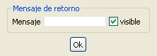
Figura 20. Creación del mensaje de retorno
Puede agregarlo Eliminar argumentos de la Transición, como tal la transición es un llamado a una operación del objeto receptor y por lo tanto tiene argumentos, visibilidad y alcance.
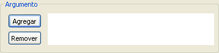
Figura 21. Elementos de la transición
Seleccione Agregar y Especifique el Nombre, Tipo y Valor del argumento.Escoja la dirección de este In, Out, In-Out.
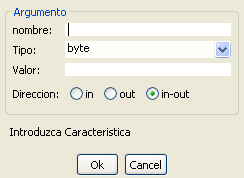
Figura 22. Propiedades para la creación de atributos en la transición
Seleccione la visibilidad de la transición, el Alacance de esta, y su tipo de Implementación (Abstracta o no); puede agregar código de la implementación seccionando el botón Cod/Com.
También puede utilizar los Modificadores Sincronizada, Garantizada, Consulta y Hoja.
Los servicios Disponibles corresponden con todas las Operaciones asociadas al Objeto Receptor de la Transición, seleccione los servicios relacionados con la transición; las nuevas transiciones serán guardadas como operaciones en la clase asociada al Objeto Receptor y por lo tanto seleccionables desde este campo por otras Transiciones.

Figura 23. Visibilidad, modificadores y alcance / implementación de la transición
Un Transición Luce Como Sigue:
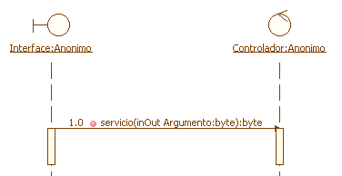
Figura 24 Representación completa de una transición
Note la numeración a la izquierda del icono de visibilidad de la transición (publico en este caso). Es conveniente mantener las transiciones numeradas y en orden para poder seguir la secuencia fácilmente. Para editar este número haga doble clic sobre este y escriba la numeración correspondiente.
Para editar el Tamaño del cuadrado del Foco de Control haga clic sobre este, aparecerán redimencionadores, arriba y abajo del Cuadrado.
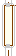
FIgura 25. Cambio de tamaño para el foco de control
Haga clic sostenido sobre estos y arrastre el cursor hasta obtener el tamaño deseado.
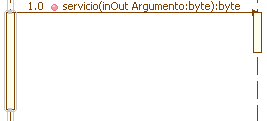
Figura 26. Alargando el foco de control
Puede Cambiar la posición del Foco de control, haga clic sostenido sobre la línea de la transición y arrastre con el cursor. Los dos focos de Control involucrados se desplazaran.
Transiciones Anidadas: las transiciones anidadas presentan un foco de control superpuesto a otro foco de control en la misma línea de vida. Representan el paso del Foco de control por parte de alguna operación del objeto, hacia otra operación del mismo objeto o bien representan llamados recursivos.
Una forma de crear Transiciones anidadas sucede cuando el segundo llamada es originado por el mismo objeto pero su destino es otro objeto receptor. Para representar esto, basta con seleccionar el icono Transición y luego hacer clic sobre un foco de control receptor de otra transición, automáticamente su área se expande para albergar el nuevo foco de control. haga clic sobre la línea de vida del correspondiente objeto receptor de esta segunda transición.
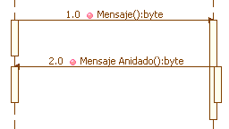
Figura 27. Transición anidada
Los llamados recursivos se crean explícitamente, haga clic sobre el icono Transición Cíclica y luego haga clic sobre una línea de vida de algún objeto.
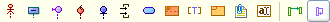
Figura 28. Botón de creación de transición cíclica
La transición cíclica también puede ser anidada. haga clic sobre el Icono Transición cíclica y luego sobre algún foco de control receptor de Transición.
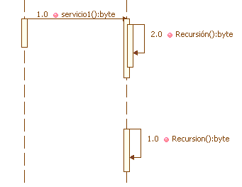
Figura 29. Transición cíclica anidada y no anidada
Fragmento Combinado: Permiten representar Controles de flujo diferentes al secuencial sencillo, Controles tales como ramificaciones provocadas por condiciones, ciclos, paralelismos entre otros, son representados de esta forma.
Los fragmentos combinados se muestran como regiones rectangulares superpuestas a las líneas de vida de los objetos involucrados. Poseen una etiqueta que permite especificar el tipo de Control; también poseen varias divisiones sobre las cuales se puede tomar el Control, y opcionalmente condiciones de guarda que especifican las condiciones para ingresar en la ejecución del fragmento combinado.
Para crear un fragmento combinado, haga clic sobre el icono "Fragmento Combinado" , luego haga clic sobre el diagrama de secuencia para insertar el fragmento.
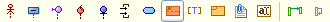
Figura 30. Botón de creación de un fragmento combinado
Aparece la ventana de especificación del fragmento combinado, en esta se puede cambiar el nombre de la etiqueta en la pestaña general.
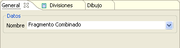
Figura 31. Datos de creación de un fragmento combinado
En la lista desplegable para nombre estan disponibles varios de las etiquetas más comunes para fragmentos combinados cada una con diferente semántica sobre el Control de Ejecución.
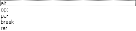
Figura 32. Semántica del control de ejecución
En la pestaña divisiones se pueden cuantas sean necesarias, escriba el nombre de la división y haga clic en Agregar. Seleccione una División y eliminela seleccionando remover.
Cambie el orden de las Divisiones en el fragmento combinado, seleccionando alguna división y haciendo clic en los botones Arriba y/o Abajo.
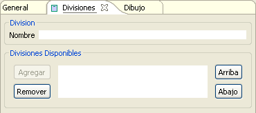
Figura 33. Divisiones del fragmento combinado
Los Fragmentos combinados lucen de la siguiente forma:
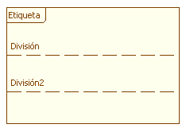
Figura 34. Representación de las divisiones en el fragmento combinado
Puede cambiar el Tamaño del fragmento combinado haciendo clic sobre su esquina inferior derecha y arrastrando con el cursor el borde de esta.
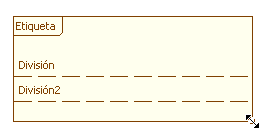
Figura 35. Cambio de tamaño para el fragmento combinado
Para editar las etiquetas de las especificaciones haga clic derecho sobre la línea de división y seleccione Especificación, Escriba el nuevo nombre.
Las divisiones se pueden arrastrar haciendo clic sostenido sobre ellas y moviendo el cursor.
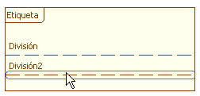
Figura 36. Movimiento de las divisiones en el fragmento combinado
Condiciones de guarda: para agregar las condiciones de Ejecución (relacionadas con la toma de control por el fragmento combinado) haga clic sobre el icono de Condición De guarda. luego haga clic debajo de la etiqueta de un fragmento combinado
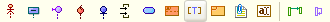
Figura 37. Creación de una condición de guarda
Al hacer clic sobre el botón, aparece la ventana de Especificación de la Condición de Guarda. Escriba en el campo de condición el texto relacionado (Datos Validos, Usuario Inexistente, etc).
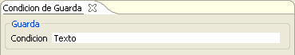
Figura 38. Datos de la condición de guarda
El fragmento combinado con la Condición de Guarda luce com sigue:
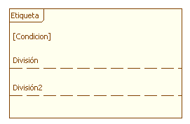
Figura 39. Fragmento combinado con condiciones de guarda
Los fragmentos combinados solo actúan sobre las líneas de vide superpuestas a éste, por lo tanto mueva el fragmento combinado hasta que interactúa con las líneas de vida de los objetos relacionados, para esto haga clic sostenido sobre el fragmento y arrastre con el cursor.
Un fragmento combinado en uso luce como sigue:
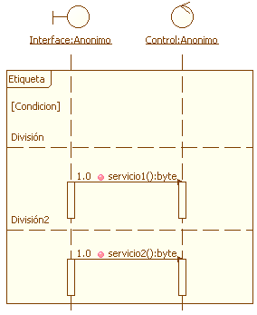
Figura 40. Fragmento combinado usado en conjunto con objetos
Invariante de Estado: Son condiciones que al momento de llegar a esta son irrevocablemente ciertas.
Para crear una nueva invariante de Estado, haga clic sobre el icono "Invariante de Estado)
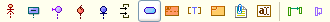
Figura 41. Creación de una invariante de estado
Luego haga Clic sobre sobre la línea de vida del Objeto Relacionado. Al hacerlo, aparece la ventana de especificación de la Invariante de Estado
Escriba el nombre descriptivo de la variante de Estado y asignele un estereo tipo desde la lista desplegable: Do, End, Begin.
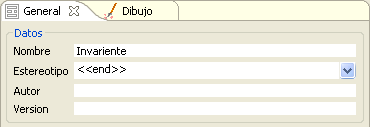
Figura 42. Datos para la creación de la invariante
Especifique las propiedades del contenedor gráfico de la invariente, Visible y Editable, para poder cambiar su tamaño.
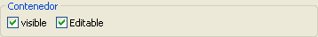
Figura 43. Propiedades del contenedor de la invariente
Seleccione la visibilidad de la Invariante: Abstracta
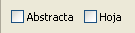
Figura 44. Atributos de la invariante
Una invariante de estado luce como sigue:
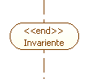
Figura 45. Representación de la invariante
Corregión: La corregión permiten indicar que el orden de envío de las transiciones puede ser alterado o no estar especificado.
Para crear una nueva Corregión haga clic en el Icono "Corregión".
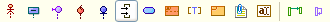
Figura 46. Creación de una corregión
Luego haga clic sobre la línea de vida del objeto relacionado, aparecera la nueva Corregión.
Haga clic sobre esta y arrastre uno de sus extremos con un clic sostenido para agrandar su extensión.
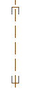
Figura 47. Representación en el diagrama de una corregión
Las diversas transiciones alojadas por la corregión puende lucir como sigue:
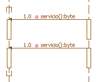
Figura 48. Invariante con comunicaciones a objetos